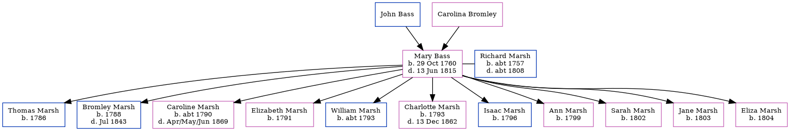

Mary Marsh (née Bass) 1760 - 1815
[ Home ] | [ Calendar ] | [ Surnames Index ] | [ Census Index ] | [ Family History ]The child of John Bass and Carolina Bromley, Mary Bass, the 4 times great-grandmother of Nigel Horne, was born in Lydd, Kent, England on Oct 29, 1760 and married Richard Marsh (with whom she had 11 children: Thomas, Bromley, Caroline, Elizabeth, William, Charlotte, Isaac, Ann, Sarah, Jane and Eliza) in Wootton, Kent, England in 1780.
She died on Jun 13, 1815 in Kent.
Parents
Children
- Thomas was born in 1786
- Bromley was born in 1788
- Caroline was born c. 1790
- Elizabeth was born in 1791
- William was born c. 1793
- Charlotte was born in 1793
- Isaac was born in 1796
- Ann was born in 1799
- Sarah was born in 1802
- Jane was born in 1803
- Eliza was born in 1804
Media
Canterbury Marriage Banns Transcription - GBPRS-CANT-M-94052500-2
Canterbury Marriages Transcription - GBPRS-CANT-M-97151149-2
Family Tree
Generated by ged2site. Last updated on Jun 11, 2024